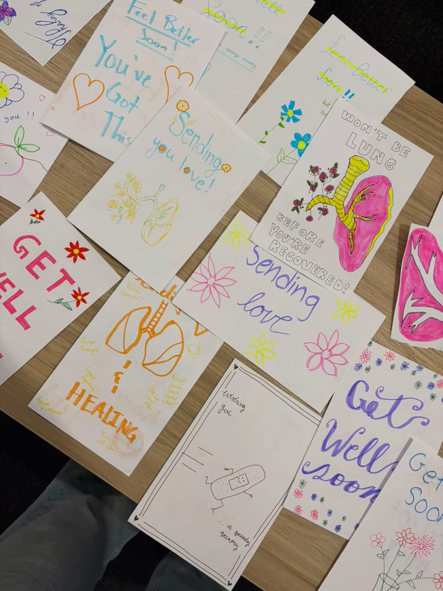
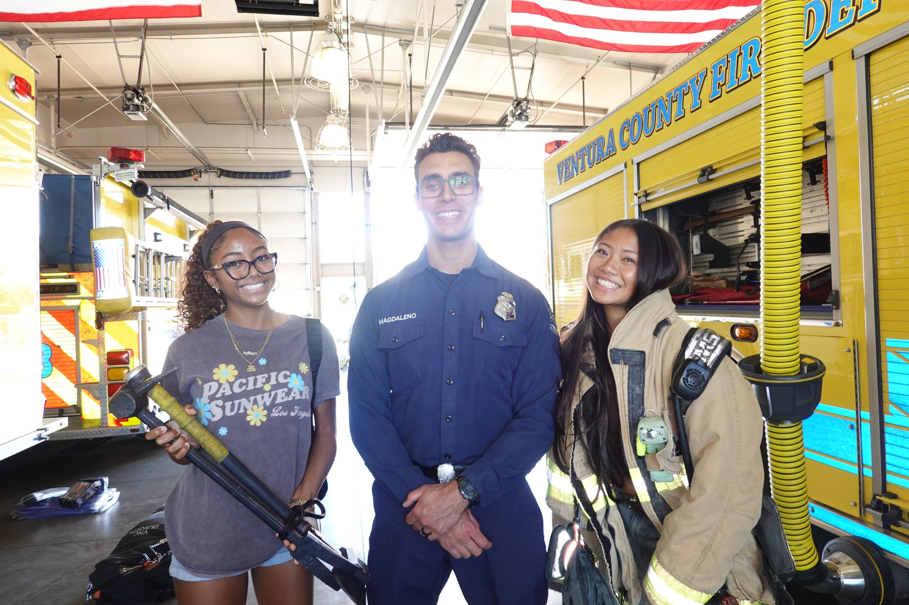
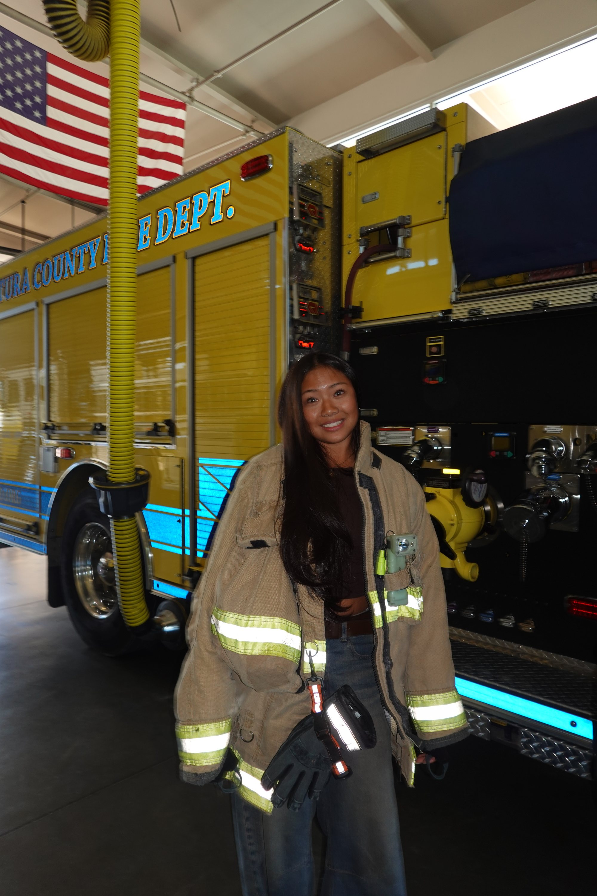
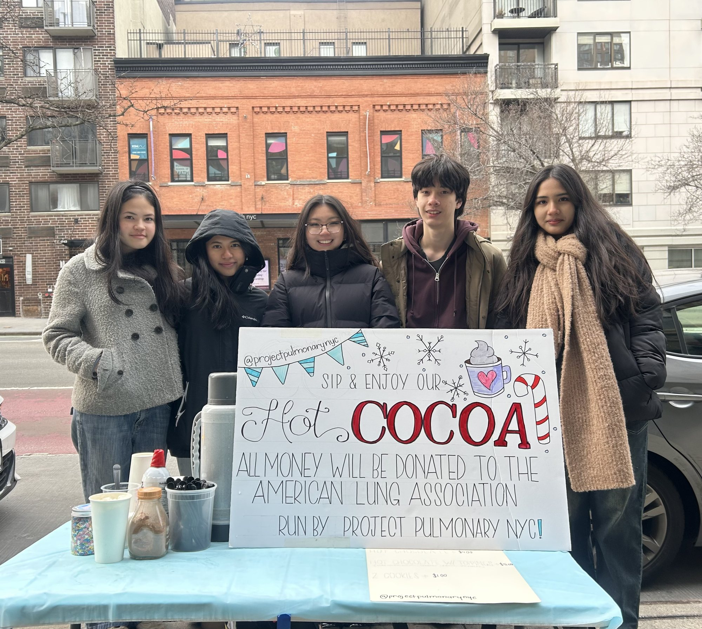
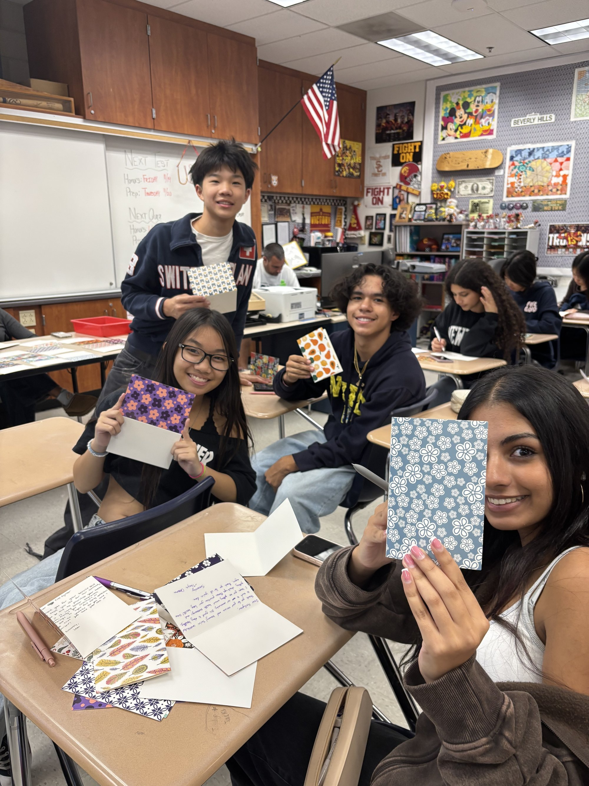
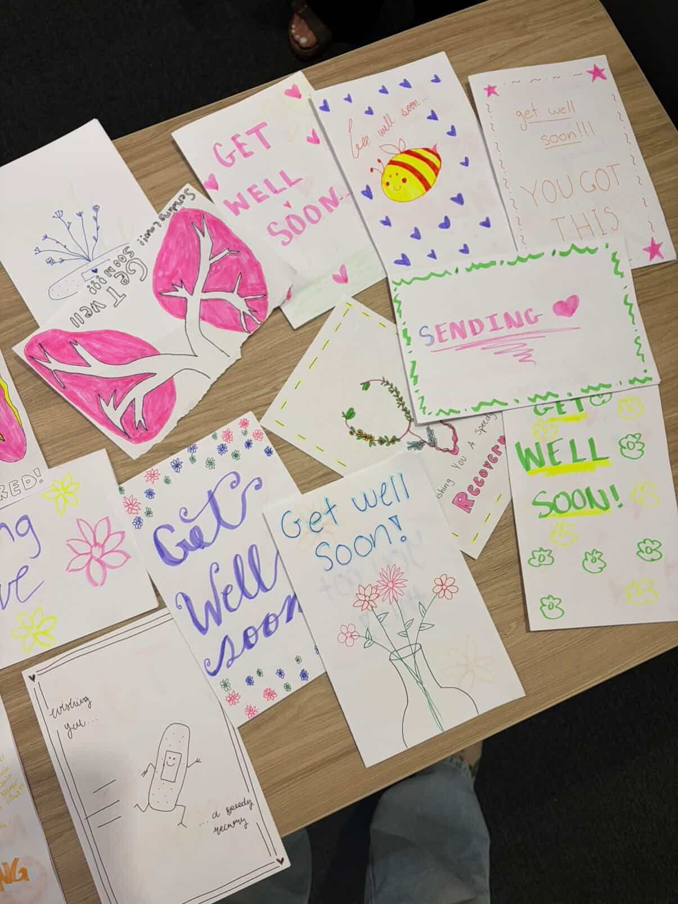
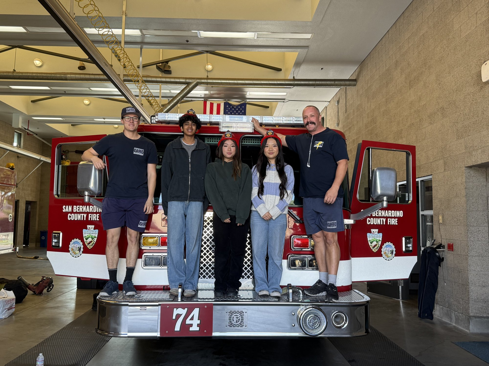
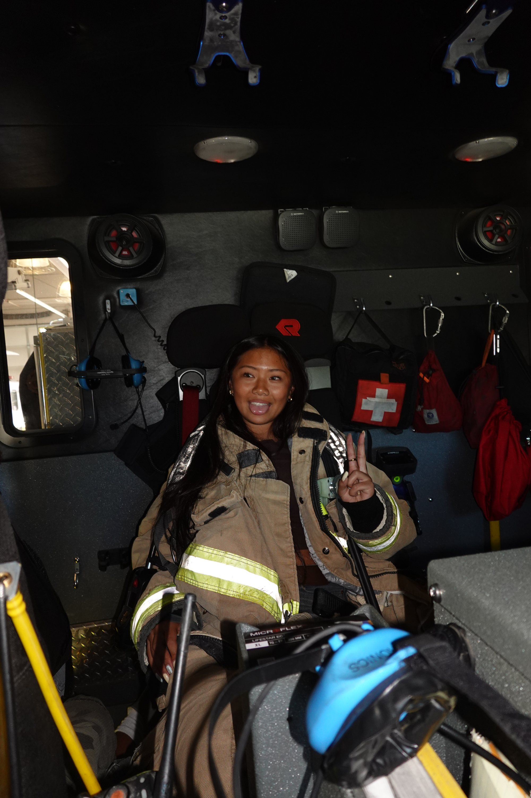
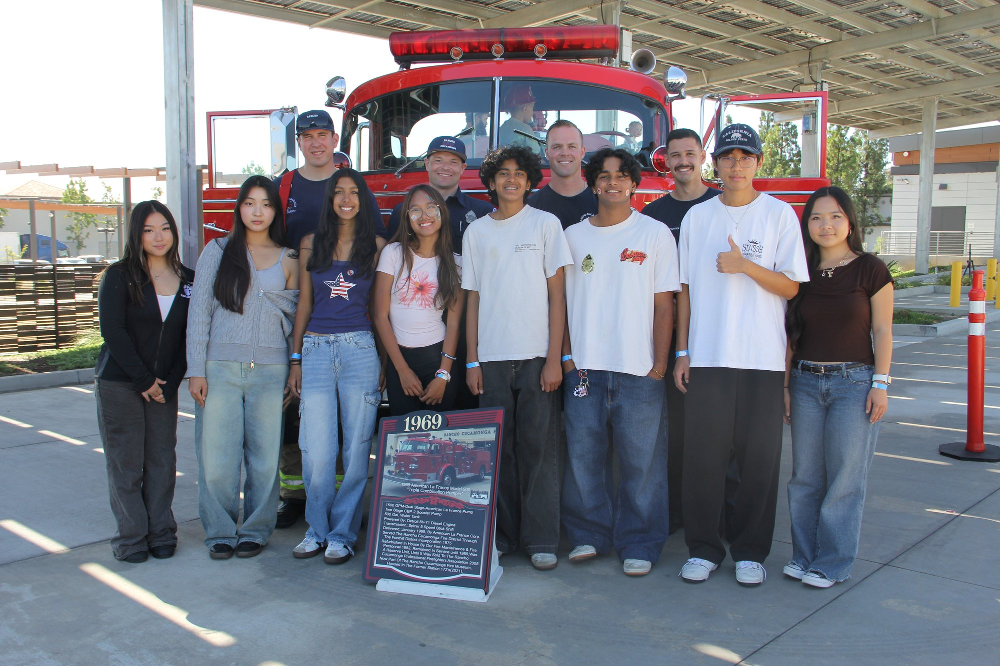

Built around pulmonary health, community service, and youth-led follow-through.
A nonprofit focused on the long-term respiratory risks firefighters face and the practical, visible service students can lead in response.


A nonprofit that turns awareness into school-based action.
In January 2025, our Southern California community was devastated by the infamous Palisades Wildfire. It was from this fire that we learned that Southern California was the most wildfire-prone region in America. Realizing the carcinogenic burdens firefighters faced, Project Pulmonary was born.
Our Founders
The story behind why Project Pulmonary exists.
Elena
My grandmother was diagnosed with lung cancer only after it had already spread, as no one had screened her early enough. This precise detail became my conviction: catching disease early, before symptoms appear, is often the difference between treatable and terminal. When the Palisades wildfire devastated my community, Southern California, that conviction found new urgency. I watched firefighters inhale thick, carcinogenic smoke with no real protection and no system in place to track what that exposure would mean for their lungs years later. I founded Project Pulmonary because firefighters deserved protection at every stage: prevention before exposure, care after it, and policy to make that protection permanent.
Bettina
Growing up as a Southern California native, wildfires were an inescapable reality. When the 2025 Palisades Wildfire devastated my SoCal community, I began to learn more about the carcinogens found in wildfire smoke. It was in that moment that I discovered the lung cancer risk associated with wildfire VOC inhalation and how often it is overlooked. These experiences inspired me to combine my passion for public health and lung cancer prevention with community service, founding Project Pulmonary to protect firefighter health, promote lung cancer prevention, and inspire the next generation of changemakers.
What makes the work distinct.
Why firefighters
Smoke, toxic particulates, and carcinogens are part of the occupational reality firefighters navigate. Project Pulmonary is built to keep those long-term respiratory risks visible and actionable.
How we work
Our chapters organize projects with high schools and elementary schools, connect with local stations, and create service opportunities that translate directly into firefighter support.
Not just an awareness campaign
Project Pulmonary is a structured nonprofit with recognizable initiatives, measurable results, and a defined community-health purpose.
What our team says about Project Pulmonary.
Reflections directly from the students behind advocacy, outreach, research, and service across the organization.
Hi, my name is Jaiden Bloodworth, and I'm so excited to be a part of the Project Pulmonary Executive Team. I serve as the Government Affairs Director, and my team will focus on lobbying government officials on behalf of every firefighter. I believe every firefighter should have the resources and support necessary to serve their communities, and that Project Pulmonary is the best way to help them. My team and I hope to raise awareness about hazardous environments and enhance cancer prevention through our governmental efforts. I hope that, through my participation, I will connect like-minded individuals to prevent future problems and provide current solutions in this field. I'm very excited to work with this team, and I look forward to what we accomplish in the future!
Hey, my name is Harshitha Venkatesan, and I'm so excited to be part of this initiative. I serve as the Community Outreach National Board Director, and what draws me most to Project Pulmonary is its focus on education, awareness, and making a real difference in people's lives. I think what Project Pulmonary does is really important because it teaches people about lung health, how to prevent problems, and helping spread important information about lung health and prevention. Being part of this also connects to what I want to do in the future because I'm interested in healthcare and helping people. I'm proud to be part of something that makes a difference in people's lives and supports our community!!
Hi my name is Christy Chen, I am so proud to be a part of Project Pulmonary. Project Pulmonary's mission is extremely inspiring and meaningful as it focuses on spreading awareness about lung health and cancer prevention as well as bettering the lives of firefighters. I love being able to do something and help out my community and especially our firefighters that work so hard to keep us safe.
Hi, my name is Siri Damu, and I'm really happy for the opportunity to be part of this. I think Project Pulmonary's mission is really meaningful because it focuses on spreading awareness and education about lung health and prevention, which is something that impacts so many people. My team works on creating podcasts and articles to help make medical topics more accessible and engaging. Being part of this connects a lot to my future goals, as I plan to pursue pre-med in college and eventually become a pediatric cardiologist. I'm really interested in combining education, advocacy, and patient care to make a meaningful impact in healthcare. Overall, I'm excited to be involved in something that aligns so closely with what I hope to do in the future.
Hi, my name is Nora Naveen, and I serve as Chief Technology Officer, Chief of Chapter Development on the national team, and President of the DFW Chapter in Texas. What draws me most to Project Pulmonary is the opportunity to use strategy, technology, and community-building to support people who put their lives on the line for others. I have always been deeply interested in medicine and in helping people in moments when support matters most, and this work allows me to bring those values into action. Through my roles, I hope to strengthen the organization's digital presence, help new chapters grow with purpose, and expand our reach so more communities can engage with our mission. I'm proud to be part of an initiative that combines advocacy, service, and health education, and I'm excited to help build a future where more firefighters and families have access to the awareness and support they deserve.
Faces behind the mission.
Students and firefighters, in classrooms and fire stations, doing the actual work.












Join a chapter, start one, or support the mission directly.
Whether you volunteer at a school drive, launch a chapter, or contribute resources, there are multiple ways to take part in Project Pulmonary.
Project Pulmonary's programs are made possible with support from these partners.
 Coffee Bean
Coffee Bean
 Mathnasium
Mathnasium
 C2 Education
C2 Education
 Rhapsody Education
Rhapsody Education
 American Lung Association
American Lung Association
 Origami for Good
Origami for Good
 Apricus Literacy
Coffee Bean
Mathnasium
C2 Education
Rhapsody Education
American Lung Association
Origami for Good
Apricus Literacy
Apricus Literacy
Coffee Bean
Mathnasium
C2 Education
Rhapsody Education
American Lung Association
Origami for Good
Apricus Literacy